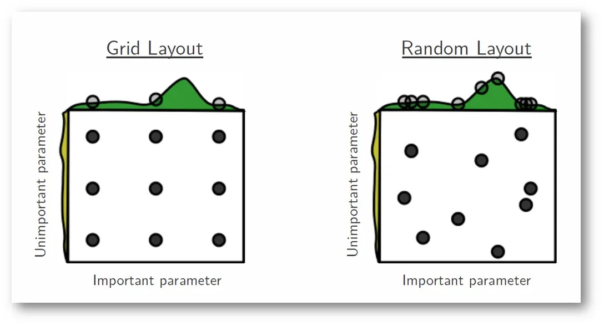
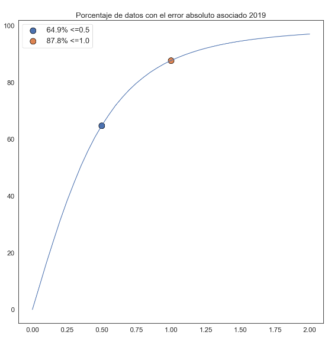
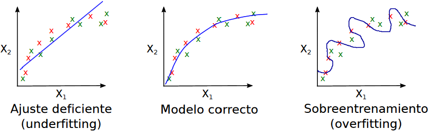
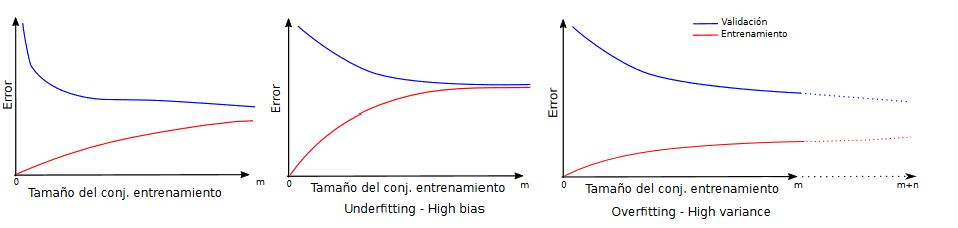

Entrenamiento y evaluación de modelos
Tema 6 de 6 Cuarto curso, 1.º cuatrimestre ≈ 13 min de lectura
Temas de MYAD · 6/6
6.1 Introducción
Los métodos de aprendizaje construyen modelos (hipótesis) a partir de datos, y hay que evaluar su calidad con la mayor precisión posible. El tema se centra en los métodos predictivos, porque en los descriptivos no hay una etiqueta con la que medir el acierto. Los criterios de evaluación son tres: precisión del modelo, complejidad computacional y comprensibilidad.
El problema de la precisión es que no se puede calcular el error verdadero (de generalización): habría que aplicar el modelo a todo el universo de instancias. La tentación es medirlo con el propio conjunto de entrenamiento, pero es un error: favorecería a los modelos sobreajustados que memorizan y no generalizan. La solución es evaluar sobre datos distintos a los de entrenamiento, que da una estimación empírica del error de generalización.
Analogía
Evaluar con los datos de entrenamiento es como poner en el examen exactamente los ejercicios resueltos en clase: quien los memorizó saca un 10 sin haber entendido nada. El examen de verdad tiene que tener ejercicios nuevos.
6.2 División de los datos
6.2.1 Entrenamiento y test
Reparto típico 80 %–20 % o 70 %–30 % (con muchos datos, el test puede ser menor). El modelo no puede "ver" el test durante el entrenamiento, y el test solo sirve para obtener las métricas generales. Con este reparto no se puede probar ninguna alternativa de configuración: si se prueban contra el test, las métricas salen sesgadas y optimistas.
6.2.2 Entrenamiento, validación y test
Reparto típico 70 %–15 %–15 % (validación y test pueden reducirse con muchos datos). Ahora sí se pueden probar configuraciones o modelos distintos: cada alternativa se entrena con entrenamiento y se evalúa con validación; se elige la mejor según esas métricas, y el test solo se usa para la configuración elegida y da las métricas generales.
Las métricas de test pueden salir mejores o peores que las de validación según cómo se repartieron los datos, aunque normalmente serán peores. Regla de oro: ninguna decisión de configuración se toma mirando el test.
6.2.3 Cómo repartir las observaciones
Suponiendo dos conjuntos (80 % / 20 %), hay dos enfoques:
- Secuencial: el primer 80 % (en el orden original) para un conjunto y el 20 % final para el otro. Riesgo: sesgos temporales (estacionalidad), que dificultan generalizar.
- Aleatorio:
- Simple: se elige al azar el 80 %. No garantiza que la distribución de las clases sea igual en ambos conjuntos, lo que puede perjudicar al modelo.
- Estratificado: aleatorio pero manteniendo la misma proporción de cada clase en cada conjunto (pensado sobre todo para clasificación).
Problemas generales del reparto aleatorio: se pierden las dependencias temporales; hay riesgo de sobreajuste si las observaciones de intervalos cortos se parecen mucho (p. ej. líneas de producción industriales: casi la misma muestra acaba en entrenamiento y en test); y hay que garantizar la repetibilidad fijando una semilla.
6.2.4 Validación cruzada (cross validation)
Muy útil con pocos datos y ayuda contra el sobreentrenamiento: permite "simular" dos conjuntos (entrenar y validar, o entrenar y testear) con el mismo conjunto. Algoritmo k-fold:
- Dividir el conjunto en
partes iguales (folds). - Reservar una parte para evaluar.
- Entrenar con las otras
. - Evaluar en la parte reservada.
- Repetir 2–4
veces, cambiando cada vez la parte de evaluación. - Promediar los resultados.
5-fold con 100 ejemplos
| Iteración | Entrena con | Evalúa con |
|---|---|---|
| 1 | 21–100 | 1–20 |
| 2 | 1–20, 41–100 | 21–40 |
| 3 | 1–40, 61–100 | 41–60 |
| 4 | 1–60, 81–100 | 61–80 |
| 5 | 1–80 | 81–100 |
Cada ejemplo se usa una vez para evaluar y 4 para entrenar; la métrica final es la media de las 5.
Variantes: validación cruzada aleatoria (los folds se forman al azar) y leave-one-out, la versión extrema: se deja una sola observación para evaluar y se repite hasta haberlas evaluado todas (
A tener en cuenta:
- El resultado no es un modelo: se generan
modelos y las métricas son su media. Si hace falta un modelo final, se reentrena con todos los datos con la configuración elegida. - Sirve para elegir hiperparámetros o para testear (dar una métrica general), pero no para las dos cosas a la vez.
- Con repartos aleatorios, fijar una semilla.
Para entenderlo mejor
Cross-validation — scikit-learn — documentación con diagramas de k-fold, estratificado y leave-one-out (artículo, inglés).
6.3 Optimización de hiperparámetros
Los modelos tienen parámetros de configuración (hiperparámetros) que afectan al entrenamiento y al rendimiento: la tasa de aprendizaje (LR), el momento, la altura máxima del árbol… Los valores por defecto rara vez son los adecuados, así que hay que buscar la configuración óptima para cada problema, un proceso muy costoso que necesita un conjunto de validación distinto al de test. Pasos:
- Entrenar con una configuración candidata.
- Evaluar en validación.
- Repetir con todas las configuraciones a analizar.
- Elegir la mejor en validación.
- (Opcional) Reentrenar con esa configuración usando entrenamiento + validación.
- Probar el modelo final en test: esas son las métricas generales.
Nunca se cambia la configuración por el resultado del test: eso contamina el conjunto de test.
¿Cómo se eligen las configuraciones candidatas?
- Grid search: prueba todas las combinaciones de un espacio predefinido, fijando "pasos" en el rango de cada hiperparámetro (equivale a bucles anidados). Simple, pero muy costoso y pierde tiempo explorando zonas sin interés.
- Random search: prueba combinaciones aleatorias del espacio. Explora un espacio más amplio, es más barato y empíricamente (Bergstra y Bengio, 2012) ha resultado más eficiente que la búsqueda exhaustiva.

Con 9 pruebas, el grid solo prueba 3 valores distintos del parámetro importante (eje horizontal); el random prueba 9, y por eso encuentra mejor el pico.6.4 Métricas de clasificación
6.4.1 Matriz de confusión y accuracy
Para un clasificador binario, al evaluar el test se cruzan predicciones y etiquetas reales en una matriz de confusión:
| Real positivo | Real negativo | |
|---|---|---|
| Predicho positivo | VP (verdadero positivo) | FP (falso positivo) |
| Predicho negativo | FN (falso negativo) | VN (verdadero negativo) |
La accuracy es la proporción de clasificaciones correctas:
Un clasificador perfecto (sin FP ni FN) tiene accuracy 1 (100 %). El error es
La accuracy solo sirve si el dataset está equilibrado y todos los errores cuestan lo mismo:
- Con datos muy desequilibrados (solo el 1 % de una clase), predecir siempre la clase mayoritaria da un 99 % de accuracy con un predictor inútil.
- En detección de vertidos de hidrocarburos (oil spills) o en medicina, un FN cuesta mucho más que un FP.
6.4.2 Recall y precision
- Recall (sensibilidad, tasa de verdaderos positivos, VPR): de todos los positivos reales, ¿cuántos detecta?
- Precision: de todo lo que predice como positivo, ¿cuánto lo es de verdad?
Analogía
Un detector de metales en la playa: recall alto = no se le escapa ninguna moneda (aunque pite también por chapas); precision alta = cuando pita, casi siempre es una moneda (aunque se le escapen algunas).
6.4.3 Kappa (κ)
Kappa mide el acuerdo entre la clase real y la predicha descontando el acierto por azar. Penaliza mucho los errores en la clase minoritaria, por lo que suele ser menor que la accuracy y es muy útil con datos desbalanceados (más significativo que la accuracy). Va de −1 a 1, aunque normalmente está entre 0 y 1: κ = 1 clasificador perfecto, κ = 0 clasificación aleatoria.
donde
Ejemplo completo (100 casos)
| Real + | Real − | |
|---|---|---|
| Predicho + | 34 (VP) | 16 (FP) |
| Predicho − | 12 (FN) | 38 (VN) |
- Accuracy =
= (34 + 38)/100 = 0,72 - Recall = 34/46 ≈ 0,74 · Precision = 34/50 = 0,68
- Acuerdo por azar:
; ; - κ = (0,72 − 0,5)/(1 − 0,5) = 0,44
Un 72 % de acierto parece aceptable, pero kappa revela que solo está "a medio camino" entre el azar y la perfección.
Errata
La diapositiva escribe
Para entenderlo mejor
Exactitud, precisión, recuperación — Google ML Crash Course — explicación con ejemplos interactivos (artículo).
6.5 Métricas de regresión
Sean
| Métrica | Fórmula | A favor | En contra |
|---|---|---|---|
| MSE (error cuadrático medio) | Muy popular; penaliza los errores grandes | Unidades al cuadrado (difícil de interpretar); ignora el signo, así que no muestra sesgos (si tiende a sobrestimar o subestimar); muy sensible a atípicos | |
| RMSE | Mismas unidades que la variable: más interpretable | Hereda la sensibilidad a atípicos | |
| MAE (error absoluto medio) | Robusta frente a atípicos | Menos útil si hay que evitar errores grandes | |
| MAPE (error porcentual absoluto medio) | Error relativo: pesa igual fallar 50 en 500 que 0,2 en 2 | Penaliza desigual valores altos y bajos ( |
Las cuatro métricas con números
Reales [10, 20, 30, 40], predicciones [12, 18, 33, 30] → errores [−2, 2, −3, 10].
- MSE = (4 + 4 + 9 + 100)/4 = 29,25
- RMSE = √29,25 ≈ 5,41
- MAE = (2 + 2 + 3 + 10)/4 = 4,25
- MAPE = (20 % + 10 % + 10 % + 25 %)/4 = 16,25 %
El único error grande (10) dispara el MSE/RMSE mucho más que el MAE.
También se usan métricas ad hoc del dominio: p. ej. el porcentaje de observaciones con error absoluto menor que 0,5 puntos (deseado) y menor que 1,0 (requerido).

El 64,9 % de las predicciones tiene error ≤ 0,5 y el 87,8 % ≤ 1,0.6.6 Diagnóstico del modelo
Si el modelo entrenado da malas métricas, se puede: aumentar el dataset, cambiar el número de características (más o menos), optimizar hiperparámetros, cambiar la complejidad del modelo o cambiar de tipo de modelo (SVM, árboles…).
Para saber qué hacer, primero hay que diagnosticar:
| Error en entrenamiento | Error en validación/test | |
|---|---|---|
| Underfitting (ajuste deficiente, high bias) | Alto | Alto |
| Overfitting (sobreentrenamiento, high variance) | (Muy) bajo | (Muy) alto, mucho mayor que en entrenamiento |

Izquierda: una recta no captura la curva (underfitting). Centro: ajuste correcto. Derecha: la curva pasa por todos los puntos, ruido incluido (overfitting).¿Aumentar el dataset? Es la solución típica, pero no siempre funciona. Para saberlo se usan las learning curves: se entrenan

Azul: error de validación; rojo: de entrenamiento. En underfitting ambas curvas convergen pronto en un error alto: más datos no ayudan (✗). En overfitting hay un hueco grande entre ellas que se va cerrando al añadir datos: aquí más datos sí ayudan (✓).6.x Ideas clave
- Evaluar en datos no vistos; evaluar con el entrenamiento premia el sobreajuste.
- Train/test (80/20, 70/30) no permite probar alternativas; train/val/test (70/15/15) sí: se decide con validación, el test solo da la métrica final. Nunca decidir mirando el test.
- Reparto secuencial (sesgo temporal) o aleatorio simple/estratificado (misma proporción de clases); fijar semilla.
- k-fold: k modelos, métrica media; leave-one-out = k = n. Sirve para hiperparámetros o para testear, no ambas.
- Hiperparámetros: grid search (exhaustivo, caro) vs random search (más amplio, barato y eficiente).
- Clasificación: matriz de confusión; accuracy (engaña con datos desbalanceados o costes distintos), recall
(FN caros), precision (FP caros), kappa (descuenta el azar; 1 perfecto, 0 aleatorio). - Regresión: MSE (penaliza grandes, sensible a atípicos), RMSE (mismas unidades), MAE (robusta), MAPE (relativa; problemas con 0 y asimetría), métricas ad hoc.
- Underfitting: error alto en ambos. Overfitting: bajo en entrenamiento, alto en validación. Learning curves dicen si más datos ayudarán (solo en overfitting).